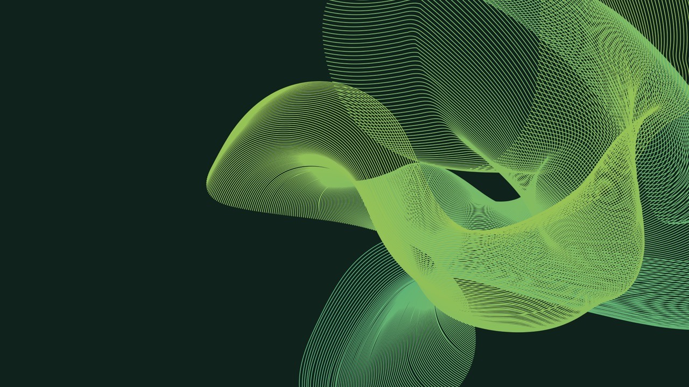
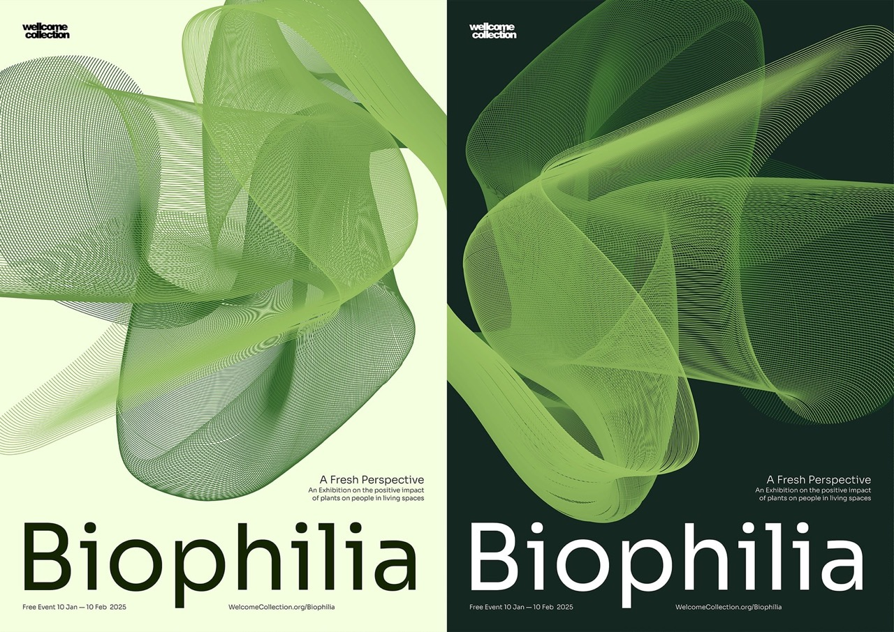
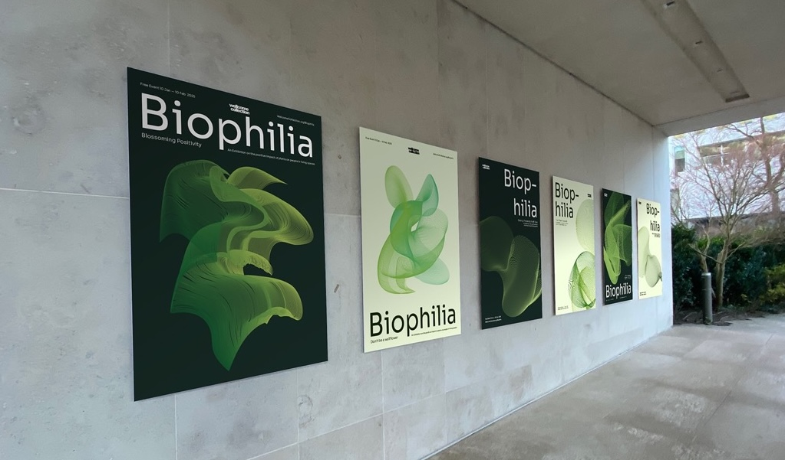
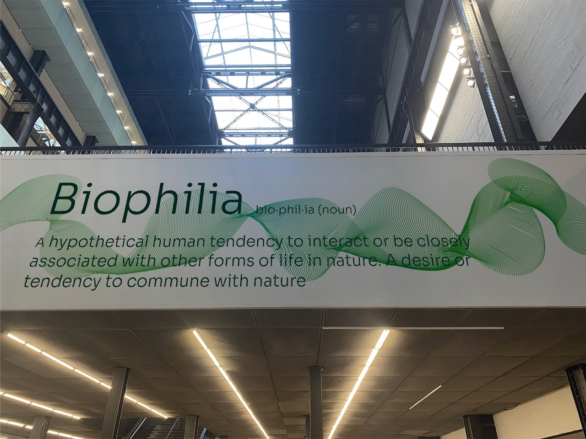
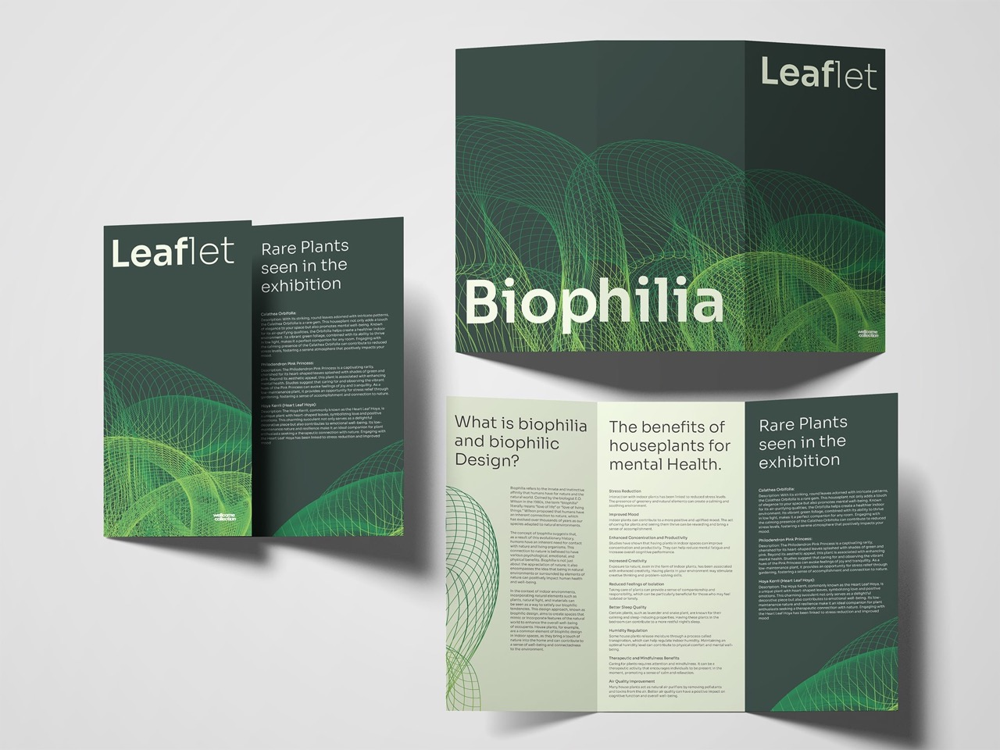
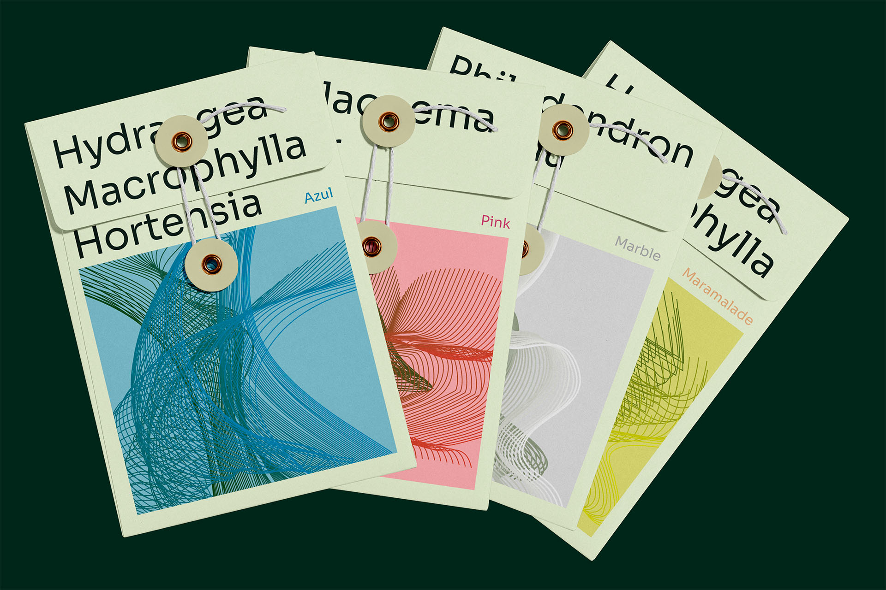
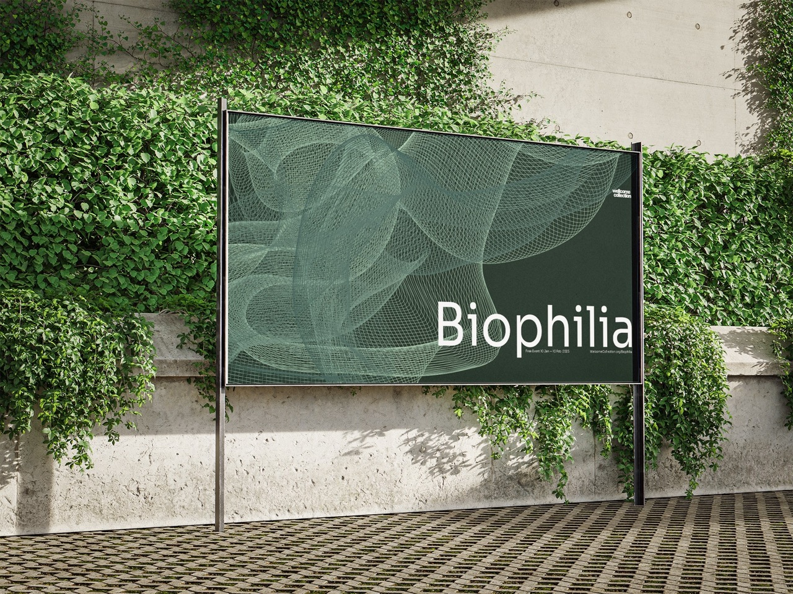
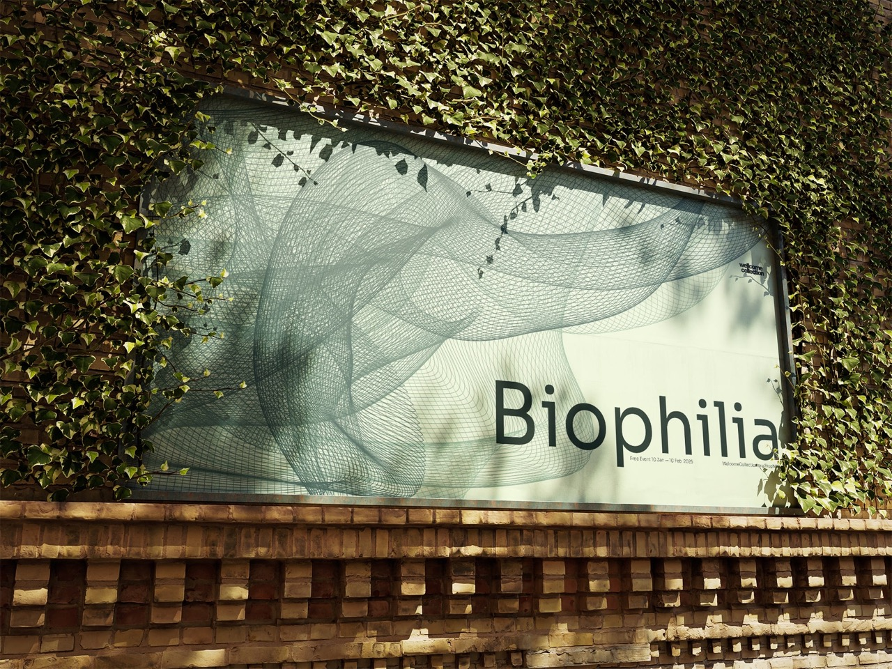
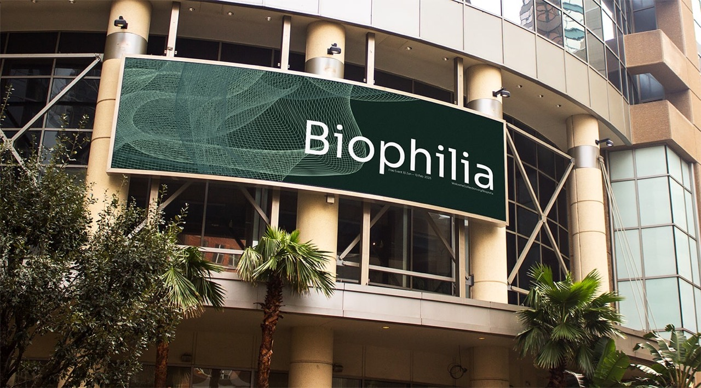

Event Identity
Motion
An exhibition on our connection to plants — Using a branding style that feels alive.
Made using abstract shapes with unique patterns.


How the branding is seen at the event.



Making the system come alive and grow like a plant.
This project explored the creation of a full identity for an exhibition called Biophilia, which explored the connection between plants and people and the human need for nature in their daily lives. Creating a full identity allowed me to explore a response across multiple touchpoints, which encouraged the design to continue growing through more applications.
Being a longer project, it allowed me to learn about the process and lifecycle of a bigger project. Finally, it allowed me to continue developing new technologies and abstract methods of communication.
Billboards in the real world advertising the event.


